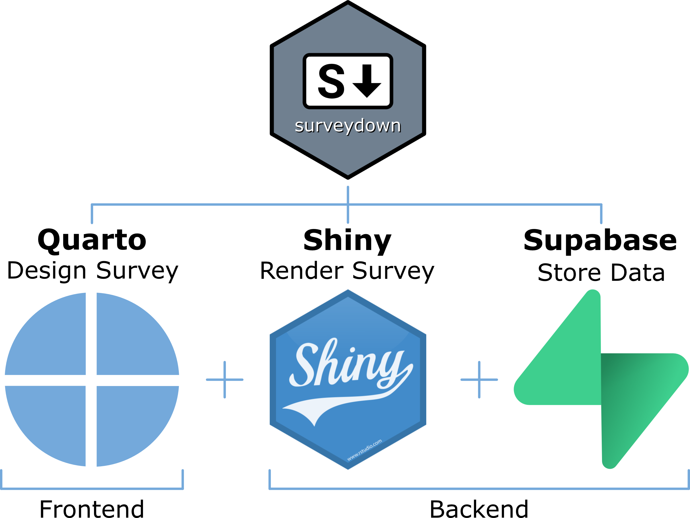

Note: This site only documents the {surveydown} R package - visit our main site at surveydown.org for more information!
surveydown is a flexible, open-source platform for making surveys with R, Quarto, Shiny, and Supabase.

The basic concept is:
- Design your survey as a Quarto document using markdown and R code.
- Convert your survey into a Shiny app that can be hosted online and sent to respondents.
- Store your survey responses in a Supabase database (or any Postgres database).
The {surveydown} R package provides functions to bring this all together.
See the documentation to get started making your own surveydown survey!
Installation
Install R & Quarto
We also recommend working with an IDE that has good support for R, Quarto, and Shiny. RStudio is great, and we also like VSCode and Positron.
Install the {surveydown} R package
You can install {surveydown} from CRAN in your R console:
install.packages("surveydown")or you can install the development version from GitHub:
# install.packages("pak")
pak::pak('surveydown-dev/surveydown')Load the package with:
You can also check which version you have installed:
surveydown::sd_version()Background & Motivation
Most survey platforms (e.g., Google forms, Qualtrics, etc.) use drag-and-drop interfaces to design surveys, making version control and collaboration with others difficult. They’re also not reproducible (others cannot easily reproduce a survey made on these platforms), and many require a paid subscription or license to use.
The surveydown package was designed to address these problems. As an open-source, markdown-based platform, all survey content is defined with plain text (markdown and R code) in a survey.qmd file and an app.R file that renders your survey into a Shiny app that can be hosted online. This makes your survey easy to reproduce, share, and version control with common tools like Git. The survey data collected is also owned by the survey designer in a separate Postgres database (we recommend Supabase as a free and open-source database provider).
If you’re curious where this whole idea came from, check out this blog post, which outlines more on the general idea and the motivation for it. The post is now outdated in terms of the overall package design, but it provides something of an origin story and some of the motivation for developing this project.
TODO List
This is a running list of things we’re working on / have already added to the project:
- Question types:
Resources / other related examples:
Citation Information
If you use this package for in a publication, please cite it! You can get the citation by typing citation("surveydown") into R:
citation("surveydown")